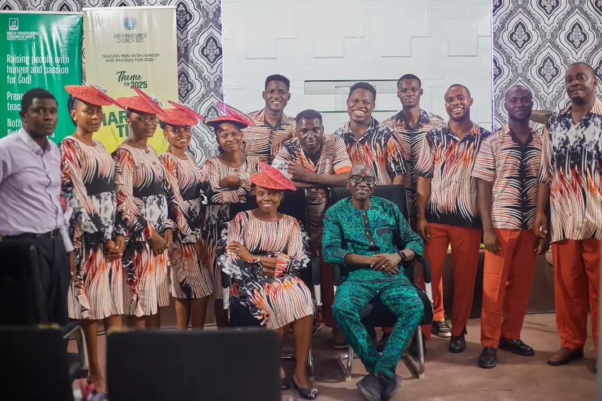

Our History
Learn about the founding and growth of Rich Pastures Church International.
Rich Pastures Church International was founded in 2005 with a vision to create a vibrant community of believers dedicated to serving God and each other. Over the years, we have grown into a thriving congregation that embraces diversity and fosters spiritual growth. Below is our church's history and milestones:
- 2005 - Rich Pastures Church International founded
- 2008 - First church building constructed
- 2012 - Launch of community outreach programs
- 2015 - Expansion of church facilities
- 2020 - Introduction of online services and virtual community engagement
- 2023 - Celebrating 18 years of ministry and service
Leadership Team
Meet the dedicated leaders of Rich Pastures Church International.

Core Beliefs
- We believe in the authority of the Bible as the Word of God.
- We believe in the power of prayer and its impact on our lives.
- We believe in the importance of community and fellowship among believers.
- We believe in serving others and making a positive impact in our society.
- We believe in spreading the message of Christ through evangelism and outreach.